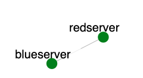

How to accessUse the XDC created for your team (e.g., teamX), named teamX and attach to real.uscbankX.csci430. Then SSH to blueserver or redserver.OverviewThis exercise lets students practice setting up and monitoring a Web server. Students will be divided into teams. Each team will play the defender role (Blue team) for their own system and the attacker role (Red team) for another team's system. This exercise uses the topology that looks like below:  .Teams can share files by creating and sharing their own Google drive or Dropbox or similar. Team 1 will defend blueserver node in their experiment - uscbank1. They will also have access to redserver node in the experiment of team 7 - uscbank7, and they will launch attacks on blueserver node in uscbank7 experiment. Similarly team 2 protects blueserver node in uscbank2 and attacks from redserver node in uscbank1. And so on. To access their nodes each team member should create an XDC in project "csci430" and attach it to the correct experiment (e.g., blue team members attach to the experiment they are defending and red team members attach to the experiment they are attacking). Blue Team MilestonesMilestone 1 - server is operational and returns something for at least one API call (e.g., registration works) - point 1 for each member of the team Milestone 2 - server is operational and returns mostly correct responses - point 1 for each member of the team Blue Team TasksThis team will control the blueserver. The team's goal is to develop several applications so that they function as specified, and to secure them and the network against intrusions. The applications to be supported are: a Web server with a banking application, a DB app to support the banking application. The team should also locate and close any unnecessary applications that may be used as a backdoor. I will open a few backdoors at the competition stage and you will need to find them and close them. The blueserver node comes with Apache web server, MySQL DB and PHP implementing very basic and buggy bank app functionality. You can use this and fix the bugs, or reimplement from scratch. Web server with a banking applicationThe bank app should work like this:
Make sure you understand how iptables command works before you use it as you may cut off your access to a given machine in SPHERE if you filter out some specific traffic to/from it, e.g., all outgoing traffic. The only way to recover from this is to reboot your machine. If you made the rules "sticky" I will have to recreate your experiment, which means you will have to reinstall everything.
Assumptions and RequirementsYou can borrow code from online sources but you need to understand what it does and how. Suggested division of workIt may make sense to divide work by server so that 2-3 people work on one server's development/configuration. Monitoring should also be automated on server to ensure that all accesses are logged, and processed correctly. Additionally, 2-3 people should work on monitoring the traffic, detecting and responding to attacks. You can have one person work on finding and closing backdoors. Once you close a backdoor, make sure that it is really closed. Also, make sure you don't close a service that a SPHERE node needs. If you do, you may cut yourself off the network. You will then need to recreate and reinstall the experiment. You can see what necessary services are at the start of your CCTF, before you install anything on the node.Suggested strategies
Red Team TasksThis team will control the redserver node. I will choose some IPs from the network's range (1.0.0.0/8) to host my legitimate clients and the rest can be used for attacks. The goal of the red team is to gain access to blue team's server and interfere with its operation. This can be done by: (1) performing SQL injection, (2) making the banking application behave in a way that is not expected (e.g., being able to withdraw money from a legitimate user's account), (3) finding and exploiting a backdoor.You can set up a custom IP on redserver like this: sudo ifconfig ethX:Y 1.1.1.11 up replace X with the actual interface number for 1.1.1.6 address on redserver node. Replace Y with a number. Start with 2 and go up with each new address. You can use this new address in wget or curl by doing this: wget --bind-address=1.1.1.11 URL or curl --interface 1.1.1.11 URL You will need to use cookies to access the server. Please explore wget and curl to learn how to save and use cookies. Assumptions and RequirementsYou can borrow code from online sources but you need to understand what it does and how. Attacks that overwhelm the blue team's network are out of scope (e.g., DDoS), but anything that targets the blue server is in scope. Also, doing "sudo su sunshine" on your experimental machine and then logging into Blue Team's machines is out of scope. Suggested division of workIt may make sense to divide work by attack technique so that 2-3 people work on different scanning approaches, 2-3 work on SQL injections, 2-3 work on password cracking, 2-3 work on sniffing and scanning for backdoors, etc.Suggested strategies
ScoringThe Blue Team receives a point for each legitimate client's request that the server processes and responds to correctly. Red Team gets the point otherwise.Exercise DynamicsTeams will need to simultaneously act as Blue Team and Red Team throughout the exercise. We will then have a post-mortem discussion and selection of a winning team.GradingEach team member will be graded based on their contribution to the team effort, not based on the team's performance. After the exercise each team member will submit a report containing the list of contributions they made to the team effort - e.g., modules that they coded, testing and setup they performed, etc. All team members must sign each report. Reports will be delivered to the instructor in class. The grades will be assigned based on the report.Useful LinksYou can use any programming language you like for any part of your assignment. Use Google to discover how to set up your servers to be as secure as possible. |